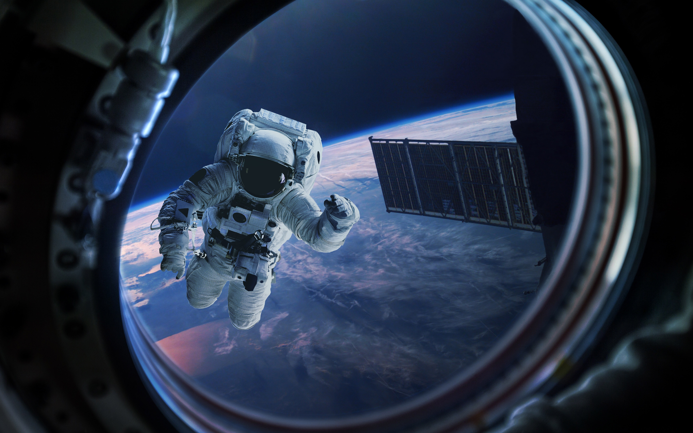

Окружающая Солнце область космического пространства, на которую распространяется солнечный ветер, называется гелиосферой. В пределах гелиосферы находятся орбиты всех известных планет Солнечной системы[6][Комм. 1]. Свободное от крупных плотных тел пространство гелиосферы заполнено так называемой межпланетной средой, а за гелиопаузой начинается область межзвёздной среды. Межпланетная среда сильно разрежена, но не является абсолютным вакуумом. Основную часть её вещества составляет плазма солнечного ветра (около 8 частиц на кубический сантиметр на уровне орбиты Земли), в небольших количествах присутствуют состоящие из нейтральных атомов и молекул газы. Её пронизывают космические лучи, магнитные поля и электромагнитные излучения солнечного и иного происхождения. К межпланетной среде относится также космическая пыль размером от 10−9 до 10−6 м, но не более крупные тела Солнечной системы[7]. В межпланетной среде путешествуют отправляемые с различными целями космические аппараты. По состоянию на 2023 год, только два аппарата серии «Вояджер» покинули гелиосферу в работоспособном состоянии и сообщили результаты непосредственных наблюдений межзвёздной среды. Низкая плотность вещества межпланетной среды делает её гораздо более удобным местом для астрономических наблюдений, чем поверхность окружённой плотной атмосферой Земли, поэтому космические телескопы позволяют получать особо ценные для науки сведения.
Как утверждают учёные НАСА, вопреки распространённым представлениям, при попадании в открытый космос без защитного скафандра человек не замёрзнет, не взорвётся и мгновенно не потеряет сознание, его кровь не закипит — вместо этого настанет смерть от недостатка кислорода. Опасность заключается в самом процессе декомпрессии — именно этот период времени наиболее опасен для организма, так как при взрывной декомпрессии пузырьки газа в крови начинают расширяться. Если присутствует хладагент (например, азот), то при таких условиях он замораживает кровь. В космических условиях недостаточно давления для поддержания жидкого состояния вещества (возможны лишь газообразное или твёрдое состояние, за исключением жидкого гелия), поэтому вначале со слизистых оболочек организма (язык, глаза, лёгкие) начнёт быстро испаряться вода. Некоторые другие проблемы — декомпрессионная болезнь, солнечные ожоги незащищённых участков кожи и поражение подкожных тканей — начнут сказываться уже через 10 секунд. В какой-то момент человек потеряет сознание из-за нехватки кислорода. Смерть может наступить примерно через 1-2 минуты, хотя точно это не известно. Тем не менее, если не задерживать дыхание в лёгких (попытка задержки приведёт к баротравме), то 30-60 секунд пребывания в открытом космосе не вызовут каких-либо необратимых повреждений человеческого организма. В НАСА описывают случай, когда человек случайно оказался в пространстве, близком к вакууму (давление ниже 1 Па) из-за утечки воздуха из скафандра. Человек оставался в сознании приблизительно 14 секунд — примерно такое время требуется для того, чтобы обеднённая кислородом кровь попала из лёгких в мозг. Внутри скафандра не возник полный вакуум, и рекомпрессия испытательной камеры началась приблизительно через 15 секунд. Сознание вернулось к человеку, когда давление поднялось до эквивалентного высоте примерно 4,6 км. Позже попавший в вакуум человек рассказывал, что он чувствовал и слышал, как из него выходит воздух, и его последнее осознанное воспоминание состояло в том, что он чувствовал, как вода на его языке закипает.
1. Луна. Луна является спутником Земли. Так астрономы называют ее, потому что она постоянно находится рядом с Землёй. Она вращается вокруг нашей планеты и никуда от неё не может деться, потому что Земля Луну к себе притягивает. И Луна, и Земля — небесные тела, но Луна гораздо меньше Земли. Земля — планета, а Луна — её спутник. И Луна, и Земля — небесные тела, но Луна гораздо меньше Земли. Земля — планета, а Луна — её спутник.

2. Месяц. Сама Луна не светит. То свечение Луны, которое мы наблюдаем по ночам, — это отражённый Луной свет Солнца. В разные ночи Солнце освещает спутник Земли по-разному. Земля, а вместе с ней и Луна вращаются вокруг Солнца. Если взять мячик и осветить его фонариком в темноте, то с одной стороны он будет казаться круглым, потому что свет фонаря падает прямо на него. С другой стороны мячик будет тёмным, потому что он находится между нами и источником света. А если кто-нибудь посмотрит на мячик сбоку, он увидит освещённой только часть его поверхности. Фонарик — это как будто Солнце, а мячик — Луна. А мы с Земли смотрим на Луну в разные ночи с разных точек зрения. Если свет Солнца падает прямо на Луну, она видится нам полным кругом. А когда свет Солнца падает на Луну сбоку, мы наблюдаем на небе месяц. А когда свет Солнца падает на Луну сбоку, мы наблюдаем на небе месяц.
3. Новолуние и полнолуние. Бывает, что луны на небе вообще не видно. Тогда мы говорим, что наступило новолуние. Оно случается каждые 29 суток. В следующую после новолуния ночь на небе появляется узкий лунный серпик, или, как его еще называют, месяц. Затем серпик начинает расти и постепенно превращается в полный круг, луну — наступает полнолуние. Потом луна снова уменьшается, «спадает», до тех пор пока опять не превратится в месяц, а затем и месяц исчезнет с небосвода — наступит следующее новолуние. Если месяц похож на букву «С», значит, луна «спадающая». А если к месяцу можно сбоку пририсовать палочку и получится буква «Р», значит, луна «растущая». Если месяц похож на букву «С», значит, луна «спадающая». А если к месяцу можно сбоку пририсовать палочку и получится буква «Р», значит, луна «растущая».

4. Лунный прыжок. Хочешь узнать, как далеко ты мог бы прыгнуть, если бы находился на Луне? Выйди во двор с мелом и рулеткой. Прыгни как можно дальше, пометь свой результат мелом и измерь рулеткой длину своего прыжка. А теперь отмерь от своей пометки ещё шесть таких же отрезков. Вот какие были бы у тебя лунные прыжки! А всё потому, что на Луне меньше сила тяжести. Ты будешь дольше находиться в прыжке и сможешь поставить космический рекорд. Хотя, конечно, скафандр будет мешать тебе прыгать. Хочешь узнать, как далеко ты мог бы прыгнуть, если бы находился на Луне? Выйди во двор с мелом и рулеткой.
5. Вселенная. О нашей Вселенной наверняка мы знаем только то, что она очень-очень большая. Вселенная возникла около 13,7 миллиарда лет назад, когда случился Большой взрыв. Его причина по сей день остаётся одной из самых главных загадок науки! Шло время. Вселенная расширялась во все стороны и наконец начала обретать форму. Из вихрей энергии родились крошечные частицы. Спустя сотни тысяч лет они слились и превратились в атомы — «кирпичики», из которых сложено всё, что мы видим. Тогда же возник и свет, который начал свободно перемещаться в пространстве. Но понадобились ещё сотни миллионов лет, прежде чем атомы объединились в громадные облака, из которых родилось первое поколение звёзд. Когда эти звёзды разделились на группы, образовав галактики, Вселенная стала напоминать то, что мы видим теперь, глядя на ночное небо. Сейчас Вселенная продолжает расти и с каждым днём становится только больше!
6. Рождение звезды. Думаешь, что звёзды видно только ночью? А вот и нет! Наше Солнце — тоже звезда, но его мы видим днём. Солнце мало чем отличается от других звёзд, просто остальные звёзды находятся гораздо дальше от Земли и поэтому кажутся нам такими маленькими. Звёзды образуются из облаков водородного газа, который остался после Большого взрыва или после взрывов других звёзд, постарше. Постепенно сила тяготения соединяет водородный газ в сгустки, где он начинает вращаться и разогреваться. Это продолжается до тех пор, пока газ не становится достаточно плотным и горячим, чтобы ядра атомов водорода смогли слиться. В результате этой термоядерной реакции происходит вспышка света, и рождается звезда. Звёзды образуются из облаков водородного газа, который остался после Большого взрыва или после взрывов других звёзд, постарше.

7. Солнечная система. Солнечная система — очень оживленное место. Вокруг Солнца по эллиптическим (слегка вытянутым кольцевым) орбитам вращается восемь планет, в том числе наша Земля. Еще семь — это Юпитер, Сатурн, Уран, Нептун, Венера, Марс и Меркурий. Оборот каждой из планет длится по-разному, от 88 суток до 165 лет. Вокруг всех планет, за исключением Меркурия и Венеры, обращаются собственные большие и малые естественные спутники. У Земли всего один спутник, у Марса — два, у Сатурна — десятки и в придачу потрясающие ледяные кольца, которые можно разглядеть даже с Земли.
Юрий Гагарин 12 апреля 1961 года Юрий Гагарин стал первым человеком в мировой истории, совершившим полёт в космическое пространство. Ракета-носитель «Восток» с кораблём «Восток-1», на борту которого находился Гагарин, была запущена с космодрома Байконур, расположенного в Кызылординской области Казахстана.
Герман Титов стал первым космонавтом, который провел на орбите более суток. За это время корабль совершил 17 витков вокруг земли. Он был физически готов лучше Гагарина. Поэтому существует версия, что Титова специально берегли для выполнения этой задачи, а Гагарину доверили более легкую в физическом, но не психологическом смысле миссию. Полет Титова состоялся 6 августа 1961 года. Всю жизнь он проработал в космической отрасли, занимал высокие и ответственные должности. Герман Титов умер в 2000 году от сердечной недостаточности, ему было 65 лет.
Валентина Терешкова Валентина Терешкова провела в космосе 2 суток 22 часа 51 минуту, ее полет состоялся в 1963 году. Она стала не только первой женщиной на орбите, но и до сих пор является первой женщиной, которая совершила одиночный полет. В отряде космонавтов она оставалась до 1997 года, а сейчас является депутатом Госдумы. Об этом сообщает "Рамблер".
Константин Феоктистов В отличие от других космонавтов, Константин Феоктистов не был военным летчиком. Но в тот полет – 12 октября 1964 года – вместе с Владимиром Комаровым в состав экипажа было решено включить гражданского инженера. В начале 1980 годов мог отправиться в космос во второй раз, но здоровье не позволило это сделать. До 1990 года он был заместителем генерального конструктора НПО «Энергия», занимался разработкой космических аппаратов, позже преподавал в МГТУ имени Баумана, который и сам когда-то окончил. Не стало Константина Феоктистова в 2009 году, ему было 83 года.
Только Меркурий и Венера во всей солнечной системе не имеет собственной Луны. В общей сложности в солнечной системе зафиксировано больше 176 спутников, как Луна. Эти спутники летают по орбите своих союзных планет и порой могут быть даже больше самого Меркурия!
Если звезда будет пролетать близко с черной дырой ее может разорвать на части. Группа ученых-астрономов наблюдает звезду, которая вращается вокруг черной дыры уже 20 лет. Она уже достаточно близко к тому моменту, когда «гравитационное смещение» обессилит звезду и она упадет во власть черной дыры.
Самая горячая планета в солнечной системе это Венера. В это трудно поверить, но до сих пор многие думают, что Меркурий — планета с самой высокой температурой на своей поверхности, из-за близости к Солнцу. Это совершенно не так! На поверхности Венеры находится множество вулканов содержащих атмосферные газы, которые и создают парниковый эффект. Температура на всей поверхности Венеры достигает 462 градуса по Цельсию или 864 градуса по Фаренгейту.
Возраст нашей солнечной около 4 миллиарда 570 миллионов лет. Точный возраст солнечной системы установить довольно тяжело, но плюс минус 30 миллионов лет и наша планета старушка уже существует как 4,571 миллиарда лет. При этом ученые говорят о бесконечном росте Солнца, так например через 5 миллиардов лет Солнце будет в несколько раз больше прежнего. А через 7,5 миллиардов лет поверхность Солнца поглотит Землю полностью.
Энцелад (Enceladus) спутник Сатурна способен отражать больше 90% Солнечного света. Невероятное открытие сделали ученые, когда обнаружили спутник Сатурна под названием Энцелад. Из-за невероятной способности отражать солнечные лучи, температура на поверхности этого спутника -201 градус по Цельсию.
Один световой год — это расстояние, которое проходит свет за 365 дней. Только представьте, что свет движется со скорость 300 000 километров в секунду, а теперь попробуйте вообразить, какой расстояние он пройдет за 365 дней. За весь год получится больше 9 триллионов километров.